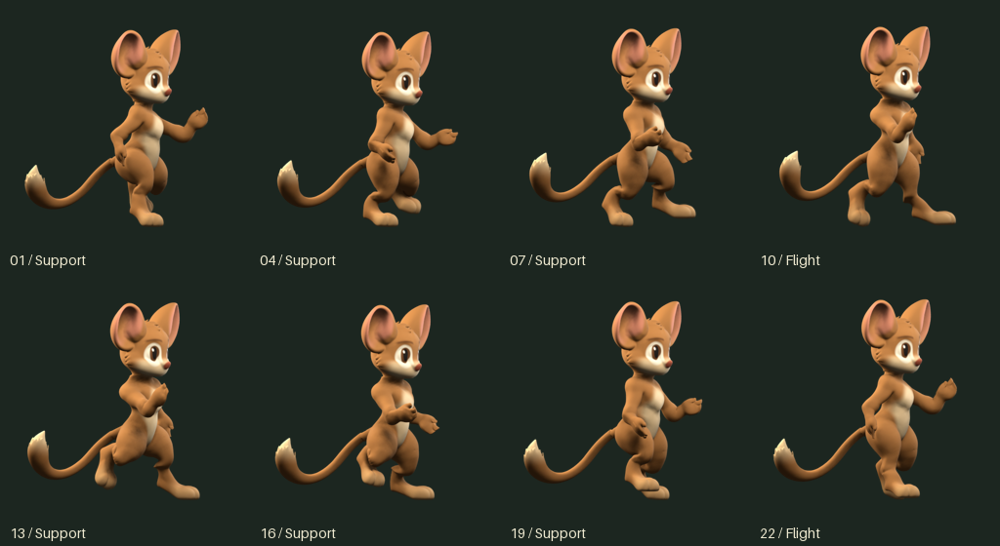
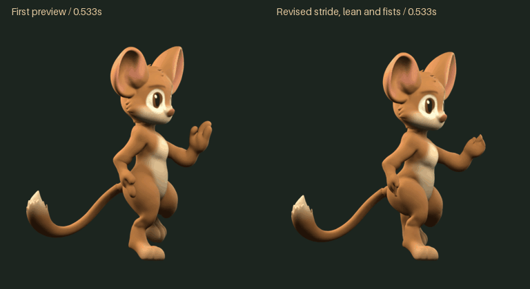
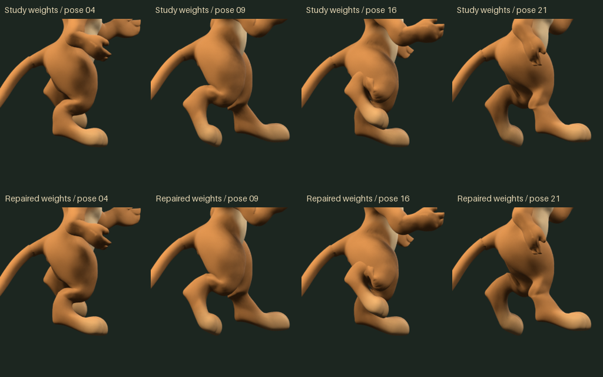

Zebes / Storybook mouse / Run 03
A longer stride, forward lean and closed hands.
Run 03 revised from the first preview: less upward bounce, a lower forward foot path, stronger extension and compact hands. Both animations play a 0.533-second cycle at normal speed.
Mouse · Run 0324 samples · 45fps
Raptor · motion reference16 samples · 30fpsLow Spec Velociraptor by pistachio · CC BY 4.0. Diagnostic side camera and flat color added; source rig and action unchanged. Travel speed was not measured; the reference's horizontal torso is excluded from the mouse direction.
Original 16-sample leg cycle retained. The reference's arm closing keys differ; the mouse's arms and legs close together.
Full sampling24 frames · 45fps
12-sample comparison12 frames · 22.5fps
3.75 alternating steps per second. The mouse represents __VIRTUAL_SPEED__ units/s of forward travel. All frames use the same ground, scale and origin. Space pauses; arrow keys step. Run 03 awaits your visual verdict.
Additional comparisons studied: AnimSchool / Angelo Sta Catalina — cartoon and track-runner mechanics; Animation Mentor / Jason Martinsen — stylized stride and compact arms.
Eight poses

First preview and revised run at the same speed

Hock deformation in identical poses

Verification